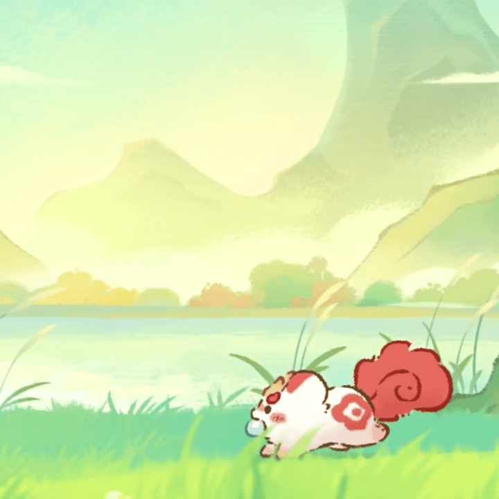

Openlist
Openlist网盘，有各种资源影视、应用、游戏等资源（本人上传和网络），默认可在共享目录上传文件，网盘文件夹有其他openlist网盘链接，
 喵~？嗷~呜~~！
喵~？嗷~呜~~！
Openlist网盘，有各种资源影视、应用、游戏等资源（本人上传和网络），默认可在共享目录上传文件，网盘文件夹有其他openlist网盘链接，
通过小爱同学、天猫精灵等智能家具设备，实现对 Windows 电脑的远程控制，包括关机、锁定、启动自定义应用/脚本、服务管理、调节显示器亮度、音量等功能。适合有远程自动化需求的用户。
2406专用寝室用相册
账号密码在寝室群公告
Poki (宝玩) - 免费在线小游戏 - 马上玩！
功能强大的在线Markdown编辑器，支持实时预览、快捷键操作、本地保存等功能。


 How to reach me: ...
How to reach me: ...